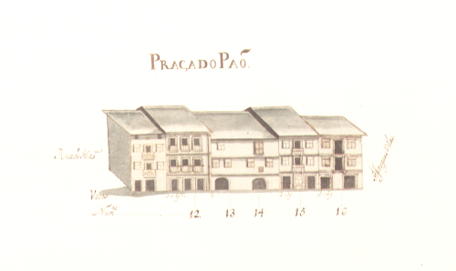

Praça do Pão - vista norte.

Praça do Pão - vista sul.
Praça do Pão - vista norte.
Praça do Pão - vista sul.
Pequena praça em frente à fachada da Sé , que ao longo dos séculos foi tendo uma vida e importância diferentes, mas sempre descendente.
Aberta talvez no séc. XV , resultou da destruição da rua dos Açougues , pequena artéria que então ligava as actuais rua D. Gonçalo Pereira e D. Gualdim Pais . Nessa data instalou-se nela a Praça do Pão . No tempo de D. Diogo de Sousa construiu-se, no ângulo que esta praça faz com a rua de Maximinos , o novo edifício da Câmara Municipal, que seria destruído nos inícios do séc. XIX (No Mappa está na rua de D. Gualdim ).
A partir de meados do séc. XVIII , com a mudança da vida comercial para a rua do Souto e zona exterior da porta que tem o mesmo nome, com a erecção da ala barroca do Palácio dos Arcebispos e, defrontando-a, com o novo edifício da Câmara (1755) , a praça do Pão irá perdendo toda a sua importância comercial e política.
Em 1868 foi projectado o alargamento da rua de Maximinos , que rapidamente foi levado a cabo, recebendo a nova rua a largura total da praça do Pão . A partir daí deixou de fazer sentido a existência de duas artérias diferentes, sendo este largo integrado na nova rua que, desde 26/11/1925 , se passou a chamar rua D. Paio Mendes .
Hoje ainda se conservam algumas das casas existentes no Mappa. Mas as mais interessantes, as dos prazos 4-6 e 13-14 já desapareceram.
Das 5 casas do lado Norte e 9 do lado Sul eram prazos do Cabido 4 e 9, respectivamente.

Praça do Pão

Praça do Pão
Enfiteuta: Maria Barbosa, viúva de Manuel Fernandes, alfaiate do Campo de S. Sebastião
Foro: 370 reis e 2 galinhas
Descrição:
Enfiteuta: José Gomes Ferraz
Foro: 480 reis e 2 galinhas
Descrição: Descrição não encontrada
Enfiteuta: Félix Francisco
Foro: 480 reis e 2 galinhas
Descrição: Descrição não encontrada
Enfiteuta: D. Paula Francisca de Melo, viúva de Francisco da Rocha Tinoco
Foro: 620 reis e 2 galinhas
Descrição:
Enfiteuta: D. Paula Francisca de Melo, viúva de Francisco da Rocha Tinoco
Foro: 825 reis e 2 galinhas
Descrição:
Enfiteuta: Padre Ambrósio Lourenço
Foro: 520 reis e 2 galinhas
Descrição: Descrição não encontrada
Enfiteuta: Dr. José de Araújo
Foro: 730 reis e 2 galinhas
Descrição:
Enfiteuta: Dr. José de Araújo
Foro: 520 reis e 2 galinhas
Descrição:
Enfiteuta: Manuel da Costa Vasconcelos
Foro: 570 reis e 2 capões
Descrição: Descrição não encontrada
Enfiteuta: D. Teresa Maria Ferreira Santarém
Foro: 150 reis
Descrição:
Enfiteuta: João Francisco, tratante
Foro: 550 reis e 2 galinhas
Descrição:
Enfiteuta: Dr. António da Costa
Foro: 1800 reis, 2 capões e 2 galinhas
Descrição:
Enfiteuta: Rev. Francisco da Costa, Abade de Tadim
Foro: 1010 reis e 4 galinhas
Descrição:
Enfiteuta: José Luís. alfaiate
Foro: 260 reis e 1 capão
Descrição: Descrição não encontrada